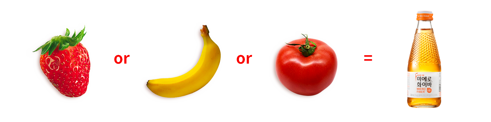
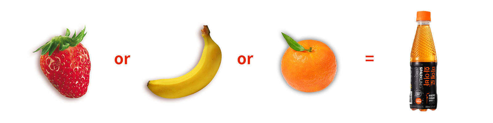

메인슬라이드
이제 짜릿하게 즐기자!
미에로화이바 스파클링 제로
미에로화이바 스파클링 제로
마시는 식이섬유
미에로화이바
미에로화이바


식이섬유란?
사람의 소화효소로 분해되지 않는 성분, 몸 속의 과다한 양분흡수를 막아주고, 장의 리듬을 조절하며, 음식물이 장 속에 머무는 시간을 단축시키는 등 현대 식생활에 꼭 필요한 물질로 제 7의 영양소로 주목 받고 있음
※출처 : 파워푸드 슈퍼푸드 사전
식이섬유의 기능
1.배설활동 촉진, 변비 예방
2.대사질환에 효과적
3.콜레스테롤 감소
식이섬유를 섭취하려면?




※딸기21g/1개, 바나나 100g/개, 토마토175g/개 기준
※출처 : 식품교환표(대한영양사협회 2010년판), 한국인영양섭취기준(한국영양학회 2010년 개정판)